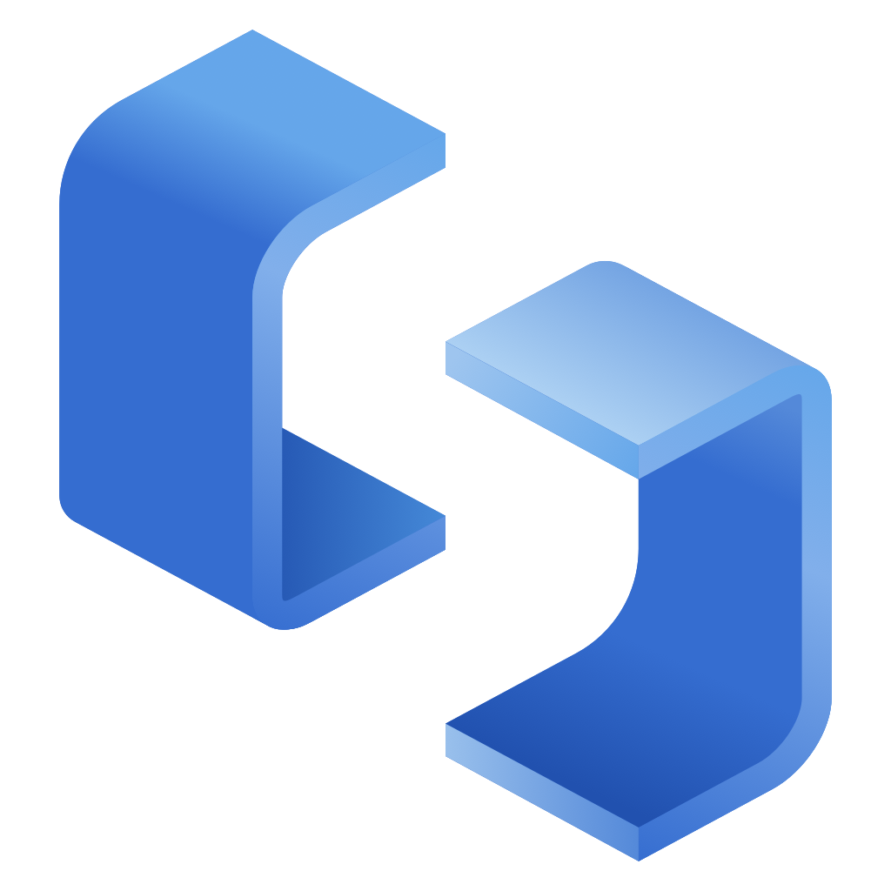

勾勒與成形
繪製平面輪廓，用推拉、偏移和路徑放樣建立幾何，再用精確變換調整比例。
繪製與塑形
ModraUp透過小屋模型與地面投影，展示建築量體的陰影效果。
繪圖 · 推拉 · 精確變換
群組 · 元件 · 階層編輯
材質 · 樣式 · 陰影
Ruby API · 外掛介面
為你的創作方式而設計
從繪製到組織，從表達再到擴充。
讓建模的每一步，都有合適的工具。
從直線、矩形和圓開始，用推拉賦予平面體積。捕捉端點、中點與交點，配合軸向鎖定和數值輸入，讓直覺與精度一起工作。
直線、矩形、圓、多邊形與圓弧。
沿面法向推拉，支援定距與重複操作。
移動、旋轉、縮放，複製與陣列。
走向三維的簡單步驟
先建構，再整理，最後表達。
從簡單量體，逐步完善你的設計。
繪製平面輪廓，用推拉、偏移和路徑放樣建立幾何，再用精確變換調整比例。
繪製與塑形把幾何整理為群組和元件。進入階層編輯，重用定義，讓重複元素保持一致。
組織與重用設定材質、邊線樣式和陰影，用場景和剖切查看空間，補充文字與 3D 文字。
樣式與呈現功能與互動持續改進
支援三大桌面平台
此頁面用於產品與功能展示
原生儲存與 SKP 交換，支援範圍見下方說明
你需要知道的事
可以。ModraUp 免費使用，支援 macOS、Windows 和 Linux 桌面平台。目前專案原始碼暫未公開。
專案目前處於開發階段，公開下載管道和正式版本發布時間尚未確定。本頁面展示目前功能，不提供安裝程式。
目前專案原始碼暫未公開；如有開放計畫，會另行說明。
支援透過 OpenSKP 匯入、匯出 .skp 交換檔案，原生專案格式為 .osk3d。SKP 交換不涵蓋全部特性：含剖切實體的模型需要儲存為 .osk3d，模型和場景陰影參數也無法透過 SKP 完整往返。
專案正在實作與 SketchUp 同名的 Ruby API，已包含擴充功能載入、Ruby 主控台、工具列與 HTML 外掛介面等功能。API 和行為尚未全部涵蓋，個別外掛需要逐項驗證，暫不承諾完整相容。
這六張圖片均為 ModraUp 的 macOS 實機擷取畫面，分別展示小屋陰影、腳本建立 3D 文字、剖切功能、地形大型模型，以及室外商業建築大型模型的兩種視角。大型模型擷取畫面記錄的是特定場景的測試狀態，不代表所有模型的效能表現。